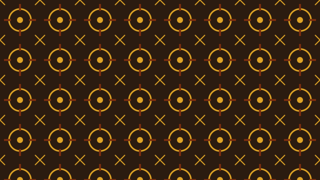

Where Adinkra came from
Adinkra symbols belong to the Akan people of Ghana and Côte d’Ivoire. According to oral tradition, the name comes from King Nana Kwadwo Agyemang Adinkra of Gyaman. After a conflict with the Asante, his designs were taken to Kumasi, where the Asante developed the art of stamping them onto cloth.
Each symbol stands for a proverb, a belief or a historical event. Because they work like a visual vocabulary, a person wearing Adinkra cloth can send a message without saying a word.

How the cloth is made
Traditional Adinkra cloth is made by hand. A stamp is carved from a piece of calabash gourd, with a handle added on the back. A dark dye made from tree bark is boiled until thick, and the stamp is dipped in it and pressed onto plain cotton cloth, one symbol at a time.
The cloth is often marked in a grid so that the rows stay straight. Ntonso, a town near Kumasi, is well known for this craft.
How the symbols are used today
Adinkra was once worn mainly at funerals and other important ceremonies, with dark cloth for mourning. Today the symbols are everywhere: on school crests, iron gates, jewellery, fashion, book covers and company logos.
When choosing a symbol for a gift or a design, read its proverb first. Browse the symbols gallery and filter by categories such as unity, strength or wisdom.
Contact us
Have a question about a symbol, or want to suggest one to add? Send a message below.